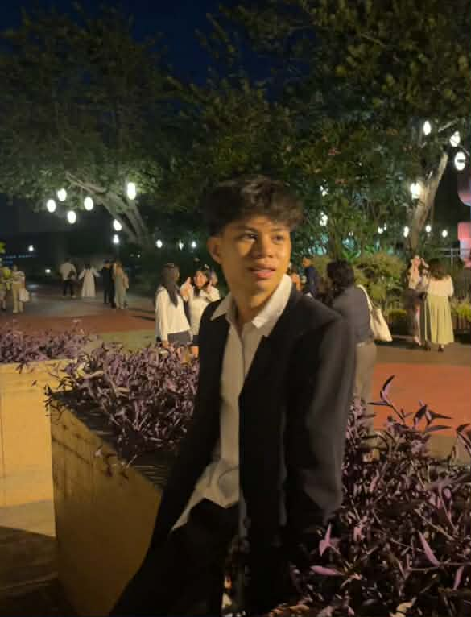

I am a student and aspiring researcher focused on computation, cognition, and artificial intelligence.
My work and studies revolve around understanding perception as a foundation for building more general, adaptive AI systems, with the long-term goal of contributing to AGI development.
I also love flowers, playing badminton, and visiting museums.
(* indicates equal contribution)